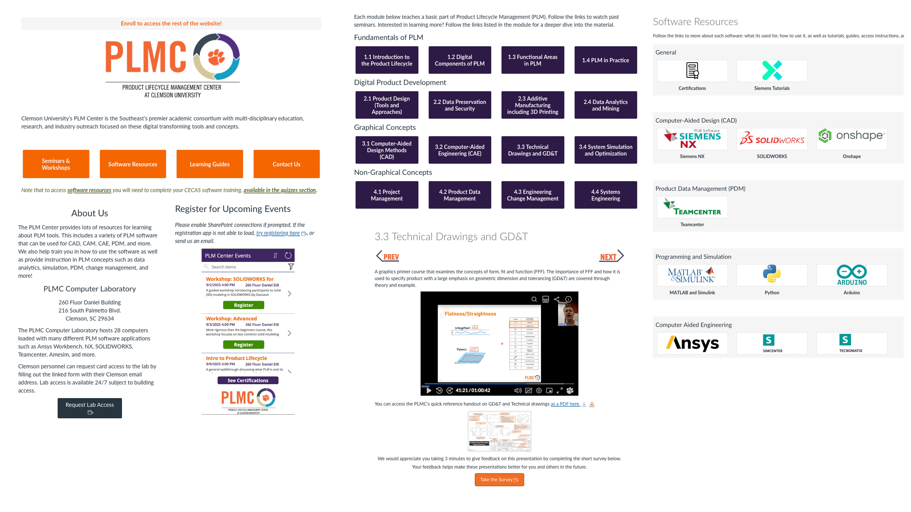

Teaching Experience
Seminars on Digital Engineering
I've written and delivered over 100 seminars on digital engineering, helping teach students the critical theories and skills needed for modern industry. Seminar topics I've presented on include:
- Product Lifecycle Management (PLM)
- Project Management
- Systems Engineering
- Engineering Change Management
- Product Design
- Computer-Aided Design (CAD)
- Technical Drawings and GD\&T
- Product Data Management (PDM)
- Data Preservation and Security
- Data Analytics and Mining
- Additive Manufacturing
- Simulation and Optimization
These seminars are done in-person but made available asychronously for students. Below is an example:
Workshops on Engineering Software
I've prepared and conducted trainings on multiple CAx platforms, including SOLIDWORKS, NX, Teamcenter, Onshape, Ansys, Python, and more. A sample of one of these trainings are below, as well as some of the guides I've prepared for students to help them.
Guide to NX
Asychronous Learning Resources for Digital Engineering
To facilitate the deployment of digital engineering tools on the campus of Clemson University, I created a Canvas page through custom HTML/CSS scripts that gave users access to sixteen learning moduels (each with an hour-long presentation), and guides for 10 software packages which included training videos, documentation, instructions for access, and quick-help links. Students also could use the Canvas page to register for in-person events, software certifications, and lab access. The deployment of the site cut down the frequency students needed additional help by nearly 50%.

Guide to Technical Drawings and GD&T
Textbook on Digital Engineering